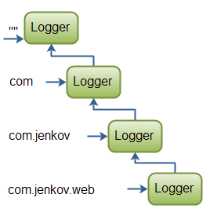
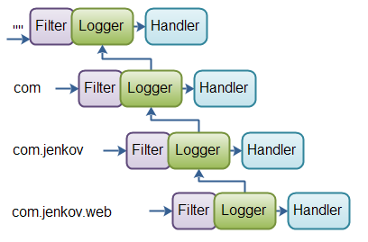
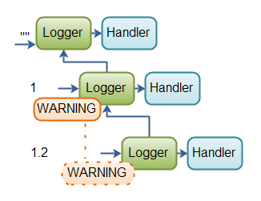
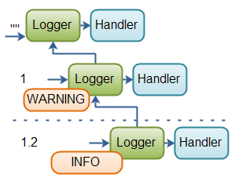

Java Logging: Logger Hierarchy
Jakob Jenkov |
The Logger's used in your application are typically organized into a hierarchy,
as mentioned elsewhere in this tutorial. This text will take a closer look at how this Logger
hierarchy works.
When you create a Logger you pass a name to the Logger.getLogger() method.
Here is an example:
Logger logger = Logger.getLogger("com.jenkov.web");
In this example the name of the created Logger is com.jenkov.web.
The name indicates a hierarchy of Loggers. Each . (dot) in the name marks a level in the hierarchy.
(Note: These levels are different from the log levels of the messages logged.). With the name com.jenkov.web
the Logger has 3 parents, with these names:
"" "com" "com.jenkov"
Here is a diagram illustrating the full hierarchy:
|  |
| Java Logger Hierarchy Example |
If you call the getParent() on the Logger created in the example above, you will get the Logger
with the name com.jenkov. If you call getParent() on that Logger you
will get the Logger with the name com. The root of the hierarchy is
the Logger with the empty string as name ("").
One thing to note is, that you need to create the Loggers in the hierarchy, before they exist.
So, if you do create a Logger like this:
Logger logger = Logger.getLogger("com.jenkov.web");
... and call getParent() method, you will get the Logger with the name "".
The reason for this is, that none of the in-between Logger's in hierarchy have been created.
You need to do the following to instantiate all the Logger's in the hierarchy:
Logger logger = Logger.getLogger("");
Logger logger1 = Logger.getLogger("com");
Logger logger2 = Logger.getLogger("com.jenkov");
Logger logger3 = Logger.getLogger("com.jenkov.web");
Now, if you call getParent() on logger3, you will get the Logger
with the name com.jenkov. The parent of that Logger is named com
etc.
Filters and Handlers in the Logger Hierarchy
When a message is passed to a Logger, the message is passed through the Logger's Filter,
if the Logger has a Filter set.
The Filter can either accept or reject the message. If the message is accepted, the message is
forwarded to the Handler's set on the Logger. If no Filter is set, the
message is always accepted.
If a message is accepted by the Filter, the message is also forwarded to the Handler's
of the parent Logger's. However, when a message is passed up the hierarchy, the message
is not passed through the Filter's of the parent Logger's. The Filter's
are only asked to accept the message when the message is passed directly to the Logger, not when the
message comes from a child Logger.
Here is a diagram illustrating the propagation of messages up the Logger hierarchy:
|  |
| Java Logger Hierarchy Example |
To show you this in effect I will illustrate it using a few code examples.
First, here is an example that creates 3 loggers in the hierarchy. A ConsoleHandler
is assigned to 2 of them. The root Logger has a Handler by default, so it
is not necessary to add a Handler to that. Then 3 messages are logged. One message
via each Logger in the hierarchy. Here is the code:
Logger logger = Logger.getLogger("");
Logger logger1 = Logger.getLogger("1");
Logger logger1_2 = Logger.getLogger("1.2");
logger1 .addHandler(new ConsoleHandler());
logger1_2 .addHandler(new ConsoleHandler());
logger .info("msg:");
logger1 .info("msg: 1");
logger1_2 .info("msg: 1.2");
The output in the log (console) of this code is:
14-01-2012 10:32:41 java.util.logging.LogManager$RootLogger log INFO: msg: 14-01-2012 10:32:42 logging.LoggingExamples main INFO: msg: 1 14-01-2012 10:32:42 logging.LoggingExamples main INFO: msg: 1 14-01-2012 10:32:42 logging.LoggingExamples main INFO: msg: 1.2 14-01-2012 10:32:42 logging.LoggingExamples main INFO: msg: 1.2 14-01-2012 10:32:42 logging.LoggingExamples main INFO: msg: 1.2
Notice how the first message is being logged only once, by the root Logger.
The second message
is being logged twice: Once by the 1 Logger, and once by the root Logger.
The third message is being logged three times: Once by the 1.2 Logger, once by
the 1 Logger, and once by the root Logger.
Now, lets try adding a filter to the middle Logger in the hierarchy, the Logger named
1. Here is the code with the added Filter:
Logger logger = Logger.getLogger("");
Logger logger1 = Logger.getLogger("1");
Logger logger1_2 = Logger.getLogger("1.2");
logger1.addHandler (new ConsoleHandler());
logger1_2.addHandler(new ConsoleHandler());
logger1.setFilter(new Filter() {
public boolean isLoggable(LogRecord record) {
return false;
}
});
logger .info("msg:");
logger1 .info("msg: 1");
logger1_2 .info("msg: 1.2");
With a Filter rejecting all messages set on the middle Logger, the output logged is this:
14-01-2012 11:33:21 java.util.logging.LogManager$RootLogger log INFO: msg: 14-01-2012 11:33:21 logging.LoggingExamples main INFO: msg: 1.2 14-01-2012 11:33:21 logging.LoggingExamples main INFO: msg: 1.2 14-01-2012 11:33:21 logging.LoggingExamples main INFO: msg: 1.2
Notice how the first message is still logged once, and the third message still logged three times,
once by each Logger in the hierarchy.
The second message, however, the message sent to the middle Logger is not logged at all.
The Filter set on the middle Logger which always return false (meaning it
never accepts any messages), filters out all messages logged via this Logger. Thus,
the second message is never logged, nor propagated up the Logger hierarchy.
Notice though, that the message propagated up the hierarchy from the Logger named 1.2 is still
logged by the middle Logger, and still forwarded up to the root Logger. The Filter set on the middle Logger
does not touch propagated messages.
Log Levels of Loggers in the Hierarchy
As mentioned elsewhere in this tutorial you can set the log levels of messages to be logged, separately
for each Logger. If a Logger has a certain log level set, then all messages
of less importance than the set log level is ignored. Additionally, all levels below the set log level
are not propagated up the Logger hierarchy. That is a different from the behaviour of
a Filter.
Here is a code example that shows a Logger hierarchy with 3 Logger's in,
and with the middle logger (named 1)
having a minimum log level of WARNING set.
Logger logger = Logger.getLogger("");
Logger logger1 = Logger.getLogger("1");
Logger logger1_2 = Logger.getLogger("1.2");
logger1 .setLevel(Level.WARNING);
logger .info("msg:");
logger1 .info("msg: 1");
logger1_2 .info("msg: 1.2");
The result of this is, that no messages logged to the middle logger of less importance than
WARNING is logged, nor propagated up the hierarchy. The log level INFO
is less important than WARNING, so the INFO message logged to the
middle logger is ignored, and not propagated to the root logger.
Another peculiar result of the above code is, that the INFO message passed to the
bottom Logger (named 1.2) is also ignored, and not propagated. The reason
for this is, that the bottom Logger does not have a log level set, and thus inherits
the level set on its parent in the Logger hierarchy. In other words, the bottom Logger
inherits the log level set on the middle Logger.
The code example above is illustrated in this diagram:
|  |
| Example of how log levels work in the Logger hierarchy. |
Here is the output logged from the above code:
14-01-2012 13:25:32 java.util.logging.LogManager$RootLogger log INFO: msg:
Only the message logged directly via the root Logger is actually logged.
In order to enable all INFO messages to be logged from the bottom Logger (named 1.2),
even if the middle Logger has a log level of WARNING, we add the following to the
code (in bold):
Logger logger = Logger.getLogger("");
Logger logger1 = Logger.getLogger("1");
Logger logger1_2 = Logger.getLogger("1.2");
logger1 .setLevel(Level.WARNING);
logger1_2.setLevel(Level.INFO);
logger .info("msg:");
logger1 .info("msg: 1");
logger1_2 .info("msg: 1.2");
The result of this code is that the INFO message logged on the bottom Logger (named 1.2)
is now logged, but it is still not propagated up the hierarchy. Well, it is, but the middle Logger
filters it out, because the middle Logger has a log level of WARNING set. Thus, the message
is not logged by the middle Logger nor propagated up the hierarchy.
The code example above is illustrated in this diagram:
|  |
| Example of how log levels work in the Logger hierarchy. |
The dashed line between the bottom and the middle Logger symbolizes, that only messages of WARNING
or higher importance are propagated up the hierarchy.
Here is the output logged by the above code:
14-01-2012 13:30:27 java.util.logging.LogManager$RootLogger log INFO: msg: 14-01-2012 13:30:27 logging.LoggingExamples main INFO: msg: 1.2
The INFO message logged to the bottom Logger is logged, but not propagated.
The INFO message logged to the middle Logger is neither logged, nor propagated.
The INFO message logged to the root Logger is logged.
The specific log levels are covered in more detail in the text on Log Levels.
The coverage here only serves to explain how the log level affects message propagation in the Logger
hierarchy.
| Tweet | |
Jakob Jenkov | |